２０２６年５月１日より、ミルモでポン！と阪神ターガースとのコラボグッズが発売されました。
最初の発表は３月に発売されたちゃお４月号での以下の記事です。
ミルモでポンが「にゅ〜」として復活し、ミルモやその仲間たちを紹介する記事の下の方にさりげなく告知がされていました。
それからしばらく音沙汰がなくなりましたが、忘れた頃にちゃんとグッズは発売されました(^^)
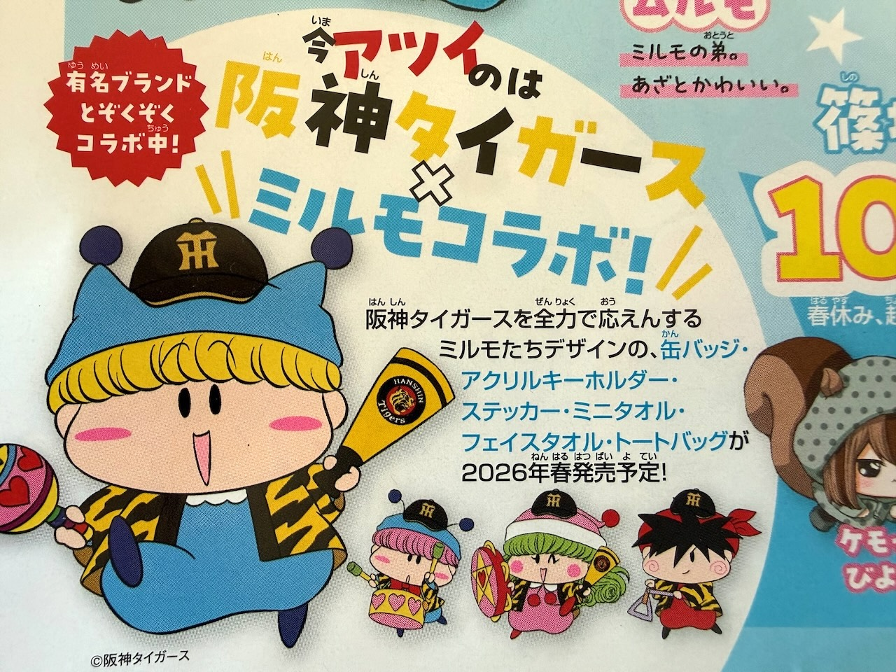
ミルモとタイガースとのつながりは過去になかった認識でいますが、阪神タイガースがいろんなキャラクターとのコラボグッズを発売する中で、我らがミルモでポン！も選んでくださったのはうれしい限りです！
まずは今回のグッズのラインナップです。
- フェイスタオル（全２種） 各2,420円（税込）
- トートバッグ 3,300円（税込）
- アクリルキーホルダー（全４種） 各880円（税込）
- ミニタオル（全２種） 各1,100円（税込）
- 缶バッジ２個セット 880円（税込）
- ステッカー４枚セット 880円（税込）
記録を兼ねて、コラボグッズ一覧の画像はコミックナタリー様より引用させていただきました。
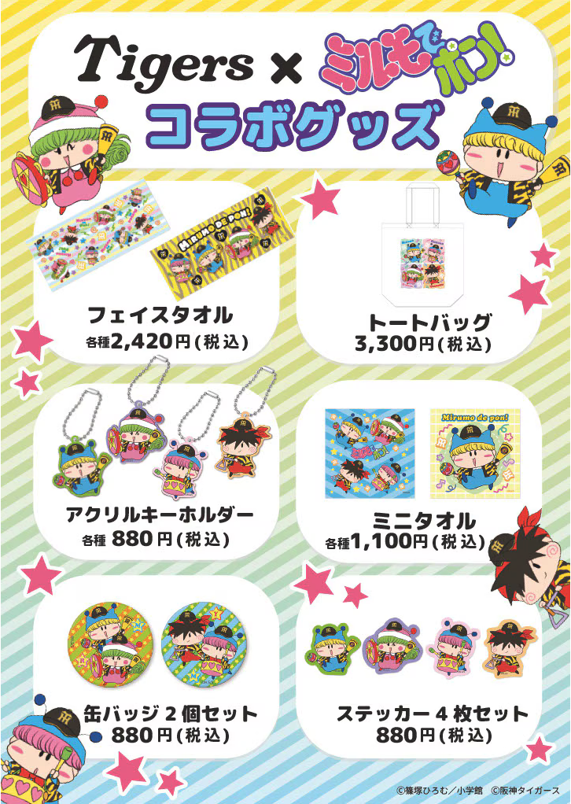
グッズはYTVショップやT-SHOPでオンラインにて販売されました。
なお、甲子園駅前のローソンでもアクリルキーホルダーや缶バッジ２個セットなどの一部のグッズが店頭販売されていたとの情報もいただきました。
私はT-SHOPでいくつかのグッズを購入しましたので、ゲットしたグッズの詳細を以下にレビューしていきたいと思います。
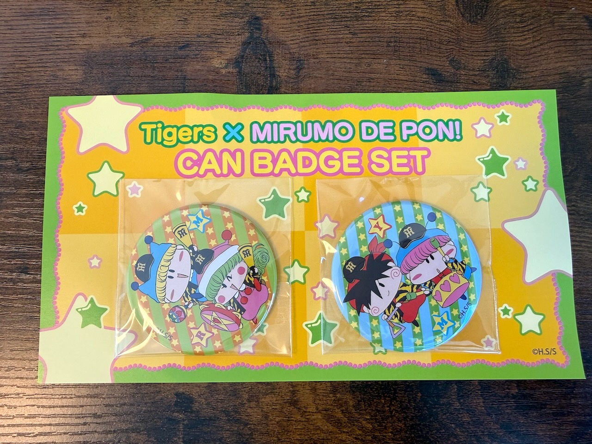
まずは缶バッジ２個セットです。
こんなかわいい台紙に缶バッジが貼り付けられています。
缶バッジを開封すると台紙はただの紙切れになってしまうのがちょっともったいないかも・・(^◇^;)
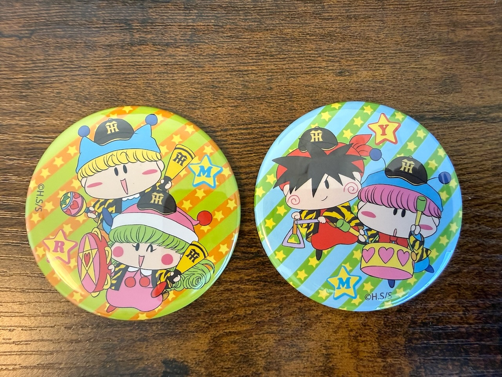
缶バッジを開封しました。
２個ともカラフルかつにぎやかで、バッグに付けると目立つこと間違いなしですね！
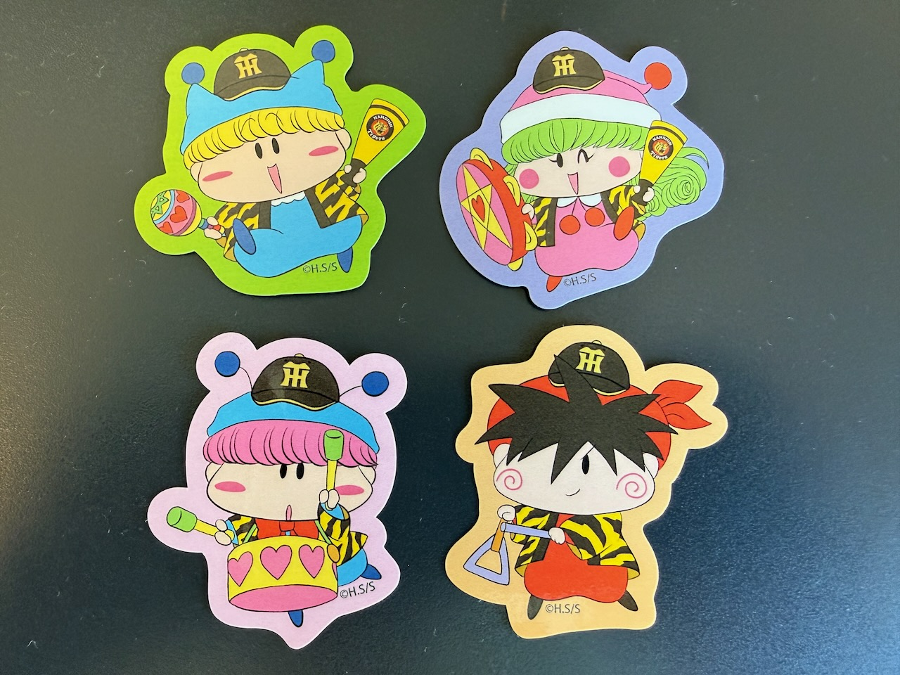
ステッカー４枚セットです。
今回のグッズのイラストになりますが、４人ともお揃いの虎柄のはっぴを着ているのがかわいいですよね。
ムルモとヤシチが応援バットを持っていないのは何か理由があるのだろーか？（実は別チームのファンだったりして！？）
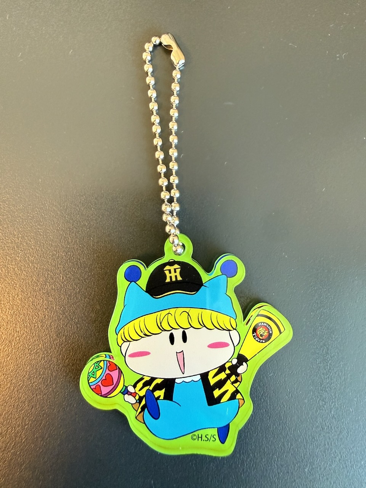
アクリルキーホルダーです。
私は応援バットを持ったキャラが欲しかったのでミルモを購入〜。
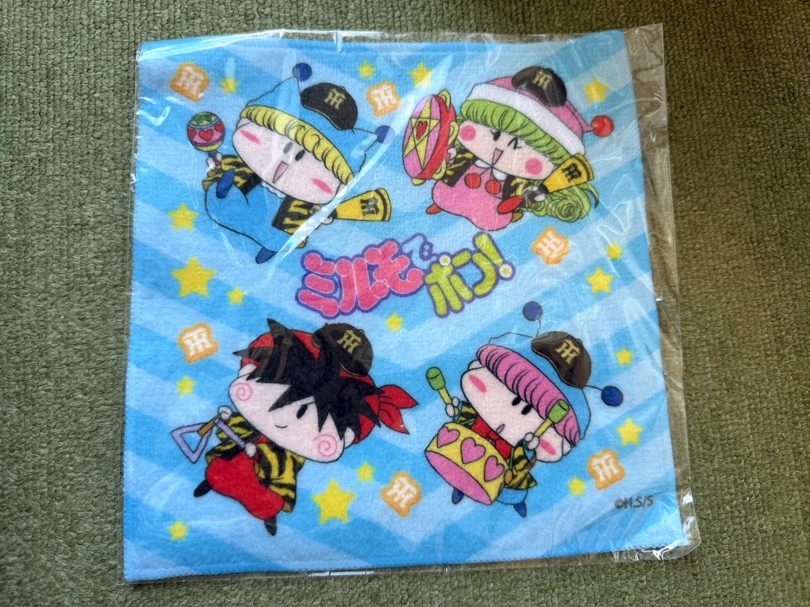
ミニタオルはちょっと小ぶりなサイズです。
この柄の他に、ミルモが大きく描かれた柄の２種類があります。
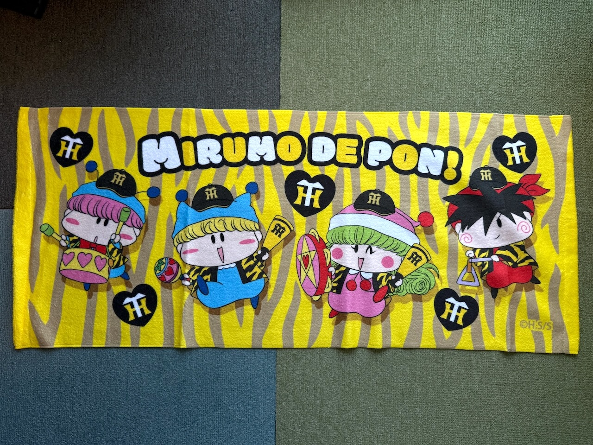
フェイスタオルです。
せっかくなので派手な柄を・・ということで虎柄を購入。
手元で広げると想像していた以上に派手なので、外で目立つように使いたくなります（他チームの野球観戦では使った場合の責任は取りませんよ(^◇^;)
こちらも柄は２種類あります。
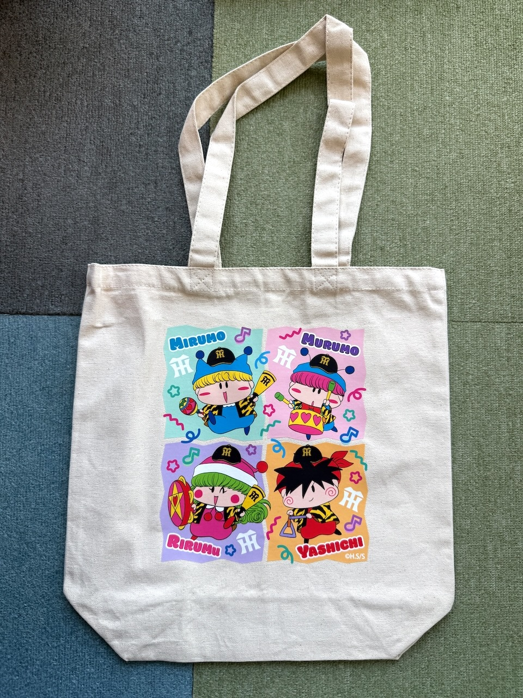
最後はトートバッグです。
妖精４人のかわいい絵柄の中に硬派な球団ロゴがびしっと主張しています。
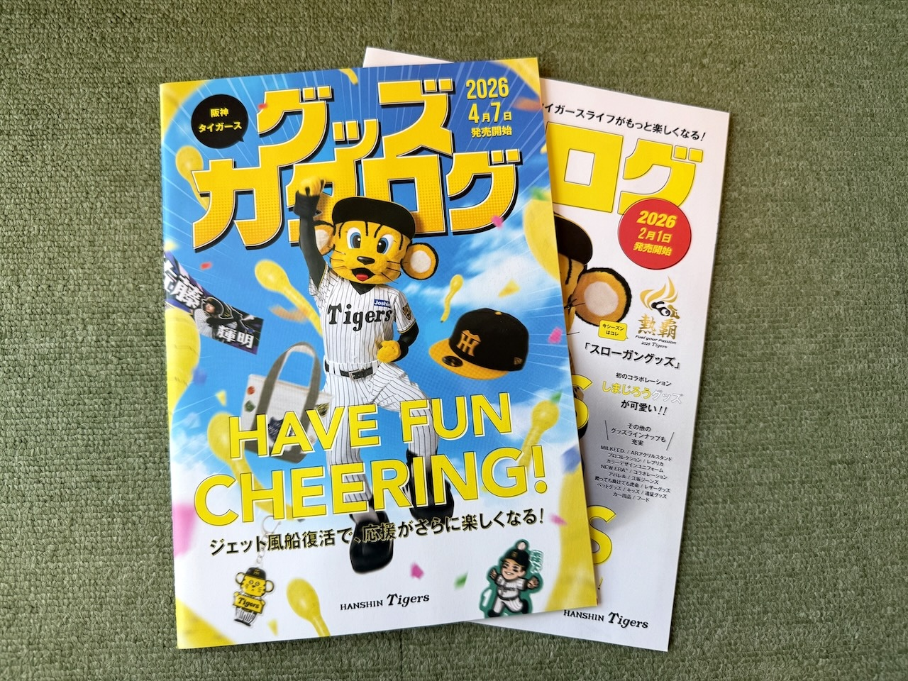
T-SHOPからの配送の中に、阪神タイガースのグッズカタログが同梱されていました。
この２冊には今回のミルモコラボは記載されていませんでしたが、この次のカタログに載っていたかどうか・・情報お持ちの方教えてくださるとうれしいです！
レポートは以上になります。
阪神タイガースとのコラボは最初見たときはびっくりしましたが、発売されたグッズを見ると全然違和感なかったですね(笑)
なので、今後も意外性のあるコラボグッズを見てみたくなります！
それでは最後にグッズ紹介記事恒例の記念イラストを掲載しますね。
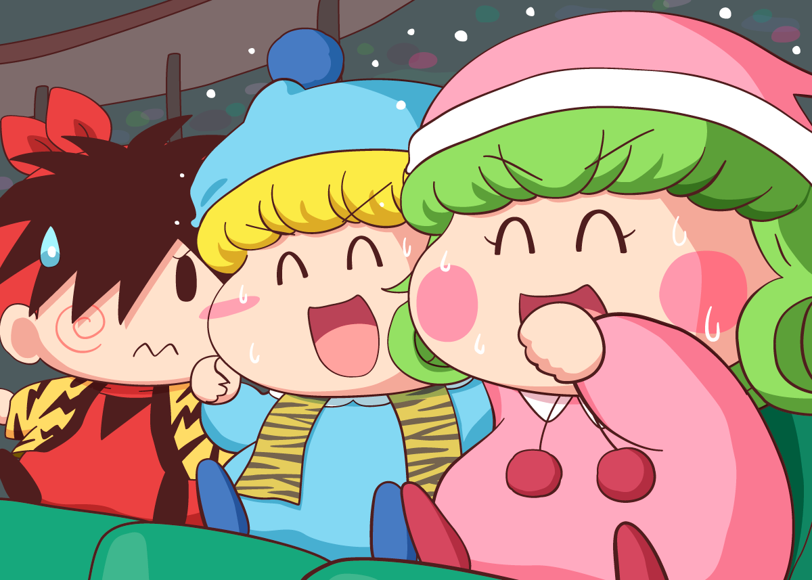
阪神タイガースといえば応援団の熱気、ということでミルモとリルムがタイガースを派手に応援しています。
夏の夜の甲子園球場は暑いですが、騒がしい妖精たちがいると余計に暑苦しいですね。。(^^;
わかりにくいですが、ミルモとリルムは後ろで肩を組んで、選手の応援歌を歌っていたりします。
なんとなく付き合わされたヤシチは、二人の熱気を無理やり見せられて引いていたり・・（実は篠塚ひろむ先生の出身地の福岡ソフトバンクホークスのファンだったりして）
(2026/7/20)